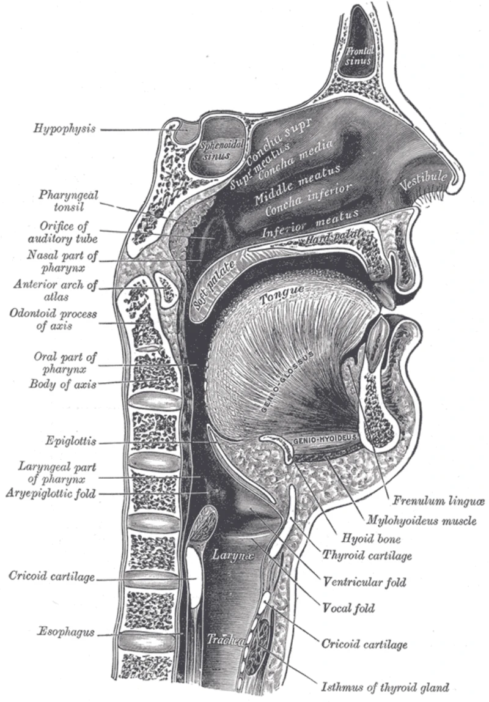

Type some text, press Speak, and the browser reads it aloud while drawing a midsagittal cross-section of the vocal tract, with the tongue, jaw, velum, and lips moving through the articulation for each sound in time with the audio.

{kind=link}
From text to targets
Text becomes ARPAbet phonemes through a 427-word dictionary pulled from CMUdict, with a rule-based fallback for anything else that handles digraphs, silent letters, and the magic-e pattern. Each phoneme has an articulatory target of 18 parameters, nine of them muscle activations (genioglossus, styloglossus, hyoglossus, and so on) and the rest things like jaw angle, lip rounding, and velum angle. A gestural score in the sense of Browman and Goldstein's articulatory phonology turns the phoneme timeline into a continuous trajectory, blending each phoneme's target with its neighbors so the tongue is already moving toward the next sound before the current one ends.
The tongue as a soft body
The tongue mesh is two chains of 15 nodes, a dorsal surface and a ventral one, with the root pinned. Distance constraints run along and between the chains, and each quad between neighboring node pairs carries an area constraint meant to keep the tongue's volume constant as it deforms, since the tongue is a muscular hydrostat with no skeleton. The solver is position-based dynamics after Müller et al. (2007). It predicts positions from velocities and muscle forces, projects the constraints ten times, and derives velocities from the corrected positions, at 240 Hz. The jaw, velum, hyoid, and lips are rigid bodies driven by PD controllers toward their targets, and a collision pass pushes the tongue off the palate. The area constraint has a sign error on two of the four corners, so volume isn't actually preserved. The distance constraints and the palate collision hold the shape anyway.
Precomputed playback
I precompute the simulation rather than run it live. Pressing Speak runs the whole PBD simulation for the utterance plus half a second of return to rest, after 50 warm-up steps at the rest pose, and stores a snapshot per 240 Hz frame. Playback interpolates between snapshots, so the physics can cost whatever it costs without dropping frames. The Web Speech API gives no timeline, only word boundary events, so each boundary becomes an anchor pairing wall-clock time with simulation time, and between boundaries the playhead advances at the stretch ratio measured on the previous word. Before the first boundary I assume speech runs 1.6 times slower than the simulation's phoneme durations.